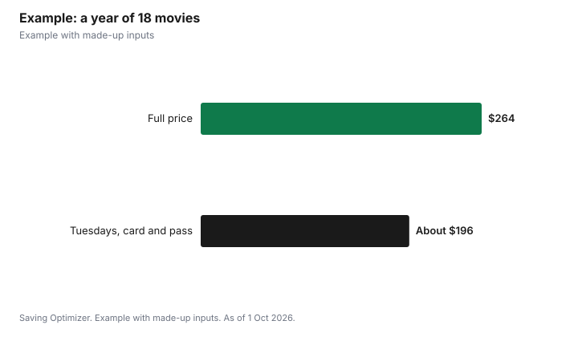

Entertainment · Canada
Cheap Movie Tickets in Canada: Discount Tuesdays, Independent Cinemas and Free Passes

The cheapest night for movies at Canada's big chains is Tuesday. Cineplex runs Big Deal Tuesdays with discounted prices, plus an extra 10% off for Scene+ members, and Landmark Cinemas' Reel Deal Tuesday offers up to 40% off new releases at participating theatres. At independent cinemas, loyalty cards and memberships usually beat any single discount day: Toronto's Revue Cinema sells a $50 loyalty card that takes $3 off every regular ticket and gives a free movie after ten. Library pass programs, such as Toronto Public Library's free Hot Docs Cinema passes, can make some screenings free. Avoid premium formats on budget nights, since surcharges still apply.
Key takeaways
- Cineplex Big Deal Tuesdays: discounted prices plus an extra 10% for Scene+ members.
- Landmark Reel Deal Tuesday: up to 40% off new releases at listed theatres.
- Premium formats such as IMAX and 3D still carry surcharges on deal days.
- Revue Cinema loyalty card: $50 for $3 off each regular ticket and a free movie after ten.
- Toronto Public Library offers free Hot Docs Cinema passes for two.
- Example with made-up inputs: 18 movies a year for about $196 instead of $264.
Tuesday deals at the chains
Cineplex's deals page lists Big Deal Tuesdays, with discounted pricing on movies every Tuesday, and says Scene+ members save an extra 10% on Tuesday ticket prices. Landmark Cinemas runs Reel Deal Tuesday, with savings of up to 40% on movie tickets all day and night at listed locations, including theatres in Kanata, Kingston, London, Waterloo, Whitby, Windsor, Calgary, Edmonton, Regina, Saskatoon, Winnipeg, New Westminster and Nanaimo. Landmark says Reel Deal applies to new releases only and that surcharges for premium experiences such as RealD 3D, IMAX and Luxe still apply. Some smaller Landmark theatres instead run a Big Movie Deal Tuesday that bundles a ticket, popcorn and a drink; Landmark says to check the Admission Prices and Features tab on your theatre's showtimes page for its price.
| Chain | Deal | Key terms |
|---|---|---|
| Cineplex | Big Deal Tuesdays | Discounted pricing; Scene+ members save an extra 10% |
| Landmark Cinemas | Reel Deal Tuesday | Up to 40% off; new releases; listed locations; premium surcharges apply |
| Landmark Cinemas | Big Movie Deal Tuesday | Ticket, popcorn and drink bundle at select locations |
Independent and repertory cinemas
Independent cinemas often price differently from chains, with lower regular prices, member discounts and special events. Toronto's Revue Cinema, in a heritage building and with member voting rights at its annual meeting, is a good example of how the numbers work. Its $50 loyalty card takes $3 off regular admission, Revue events, special events and film-print screenings, gives $1 off a medium popcorn, a free movie and popcorn after ten movies, a free movie on your birthday and free entry to member-only screenings with a guest. Senior and student tickets, which are already reduced, get no further discount. For heavy moviegoers, its Individual membership costs $550 a year for unlimited regular first-run, second-run and in-house screenings, plus a free large popcorn and soda each visit, and a Family membership costs $1,500. Revue says prices include HST and membership sales are final.
| Option | Price (incl. HST) | Main benefit |
|---|---|---|
| Loyalty Card | $50 | $3 off regular admission; free movie after ten |
| Individual | $550 | Unlimited regular screenings for the cardholder |
| Family | $1,500 | Unlimited regular screenings for four family members |
The Revue's page explains its discount with an example: a $13 regular ticket with the $3 loyalty discount costs $10. Using that example, the $50 card pays for itself after about 17 regular tickets, sooner if you count the free tenth movie and the birthday movie. Many other independent cinemas across Canada have their own member programs, so check the cinema closest to you.
Free and nearly free screenings
- Library passes: Toronto Public Library's tpl:map program lists a Hot Docs Cinema pass that gives the cardholder and one guest free admission to a film, booked in advance and subject to availability. Passes are released on the first Wednesday of each month at 2 p.m.
- Library streaming: many libraries offer free film streaming services with a card.
- Member-only screenings at independent cinemas, which are free for members at the Revue.
- Partner offers: Cineplex's deals page lists time-limited third-party offers, such as a free ticket with participating grocery products.
Snacks and extras
Concessions can cost as much as the ticket. Cineplex's deals page lists one free refill per visit on a large popcorn or large fountain drink, so sharing a large is better value than two smalls. At the Revue, loyalty members get $1 off a medium popcorn, and Individual members get a free large popcorn and soda every visit. Some theatres allow you to bring a water bottle; check your cinema's policy rather than assuming. Eating before the show is the simplest saving of all.
Accessibility and support persons
If you need a support person, the Access 2 Card gives your support person free admission at participating venues, including movie theatres. Access 2 notes that Cineplex and Landmark do not allow online ticket purchases with the card, so plan to buy at the box office.
Example with made-up inputs
These numbers are an example with made-up inputs. A film fan sees 18 movies a year: 10 new releases at a chain and 8 repertory films at an independent cinema. Paying a made-up $16 weekend price at the chain and $13 at the indie, the year costs $160 plus $104, or $264. Switching chain visits to Tuesdays at a made-up $9.50, less 10% as a Scene+ member, costs about $86. At the indie, a $50 loyalty card brings each ticket to $10, and the free tenth movie is not reached, so 8 films cost $80 plus the $50 card, or $130. Using one free library pass for two of those screenings brings it to $110. The total is about $196, saving $68.
| Plan | Chain (10 films) | Indie (8 films) | Total |
|---|---|---|---|
| Full price | $160 | $104 | $264 |
| Tuesdays, loyalty card, library pass | About $86 | $110 | About $196 |

Steps
- Find out which discount day your nearest chain theatre runs.
- Join Scene+ before a Cineplex Tuesday visit.
- Skip premium formats on budget nights.
- Look up your local independent cinema's loyalty card or membership and do the break-even math.
- Check library pass programs on release day.
- Track how many movies you see to choose between a card and a membership.
Common mistakes
- Buying a loyalty card or membership you will not use enough to break even.
- Paying the IMAX surcharge on a discount night.
- Forgetting that indie memberships are final sale.
- Ignoring library passes because they go quickly.
Related: Scene+ points for movies and CineClub versus Scene+.
Sources
- Cineplex, Deals, cineplex.com/deals, as of 1 Oct 2026.
- Landmark Cinemas, Reel Deal Tuesday and Big Movie Deal Tuesday, landmarkcinemas.com, as of 1 Oct 2026.
- Revue Cinema, Membership, revuecinema.ca, as of 1 Oct 2026.
- Toronto Public Library, tpl:map, torontopubliclibrary.ca/map, as of 1 Oct 2026.
- Access 2 Card, Frequently Asked Questions, access2card.ca, as of 1 Oct 2026.
- Ticket prices in the example are made-up inputs.
Frequently asked questions
What is the cheapest day for movies in Canada?
Tuesday at the big chains: Cineplex runs Big Deal Tuesdays and Landmark runs Reel Deal Tuesday at participating theatres.
How much is Landmark Reel Deal Tuesday?
Up to 40% off movie tickets at listed locations, for new releases only, with premium surcharges still applying.
Do Scene+ members save more on Cineplex Tuesdays?
Yes. Cineplex says Scene+ members save an extra 10% on Tuesday ticket prices.
Is the Revue Cinema loyalty card worth it?
It costs $50 and takes $3 off each regular ticket, plus a free movie after ten, so it pays off for regular visitors.
Can I see movies free with a library card?
Toronto Public Library's tpl:map program offers free Hot Docs Cinema passes for the cardholder and a guest, subject to availability.
Can I use an Access 2 card online at Cineplex?
No. Access 2 says Cineplex and Landmark do not permit online ticket purchases with the card.
Researched and drafted with AI assistance and fact-checked against official Canadian sources. How we create content.
Disclosure: Saving Optimizer may earn a commission if a partner link is added later, such as a movie gift card offer type. No partnership is claimed on this page. Education only.